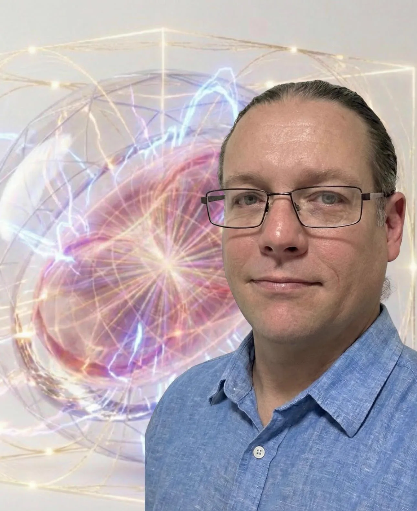

Luke Nathan Hayes
The person in the middle of all this: hands, doubts, appetite, memory and a very full hard drive.

Chapter 01 of 13 | The bloke
Before the tori, satellites and civic machinery, there is Luke: living at Amity on Minjerribah, doing practical work, making songs, having a laugh and trying to connect large questions to useful local action.

I am not a clean job title. I have worked with my hands, travelled, sold things at markets, helped people with technology, recorded community events, written songs and kept following questions that refused to stay in one box.
Luke Nathan Hayes is the person. Luke Catalyst takes the public systems questions. Strange but True is the work I can actually offer now. i C. infinity carries the music. Tiggy Bestmann wanders into romantic travelogue. Australian Sire turns up the heat in the books. Aura of Intelligence holds the long arc. Those names are different doors into one life, not a collection of companies pretending to be bigger than they are.
They are not a row of brands. They are names Luke writes, works, sings, dreams and sometimes misbehaves under.
The person in the middle of all this: hands, doubts, appetite, memory and a very full hard drive.
The public systems thinker who turns an awkward question into a diagram, a talk or a working experiment.
The bloke at the market table who helps with technology, art, local work and whatever odd problem walked in that morning.
The musical self who sings the emotional architecture before the rest of Luke has finished explaining it.
The romantic traveller: playful, slightly aloof, forever turning a map, a chance meeting or an impossible system into a love story.
The hotter adult-fantasy register: not a title simply worn, but a name the character earns through real wins, kept promises and adult trust.
The long arc: one person trying to make mind, memory, sovereignty and relationship navigable without claiming to have finished the machine.
The planetary invitation, imagined as a harbour where different projects can meet without becoming one throne.
The still-proposed co-operative path from useful local work towards shared training, tools and infrastructure.
The map on the wall: a way to walk between Luke's public worlds and see how they connect.
Each name brings a different part of Luke to the front. Together they sound like one crowded, curious life.
Luke Nathan Hayes is the person. Luke Catalyst is the public identity used for systems, ideas, speaking and creative provocation. The playful name-meaning image is personal symbolism, not authoritative etymology.
Follow this into the live workA current sole-trader practice built around patient, practical help. The public record shows technology, AI, media, events and project support, with a local market-table scale rather than an invented corporate one.
Follow this into the live worki C. infinity is the music and creative identity. Aura of Intelligence is Luke's personal cognitive architecture and long-horizon constellation. Neither name turns a proposal into a completed organisation.
The practical, intellectual and creative strands are most legible when they remain beside one another.
The business card, CV and live Strange but True site show the work Luke offers now, at the honest scale of a bloke, a market table and the people who come looking for help.
The Dunwich cultural intelligence node and ready SET Co-op do not currently exist. They belong to Luke's proposed pathway for shared local facilities, learning and work.
Humour belongs inside the story because it is part of Luke's tone and personality. The wine screenshot and comedy work reveal the bloke without being asked to prove anything else.
Let this chapter sound like
Album 5: Straddie Fun
It puts the shed, market table, patient tech help and bigger questions into the same warm local frame.
The lyric is here now. Luke will add the video when the right recording reaches this laptop.The big ideas did not arrive instead of ordinary life. They grew through it, usually with a computer humming, an island nearby and another song on the way.